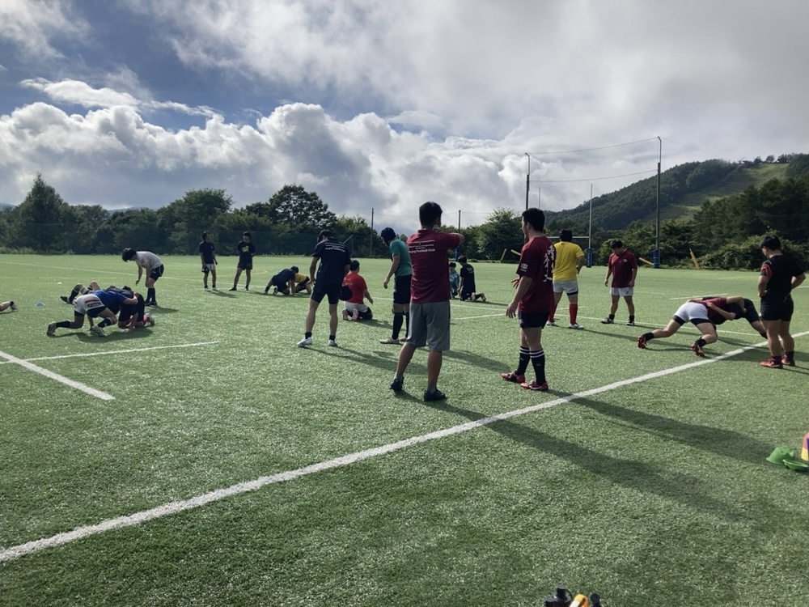
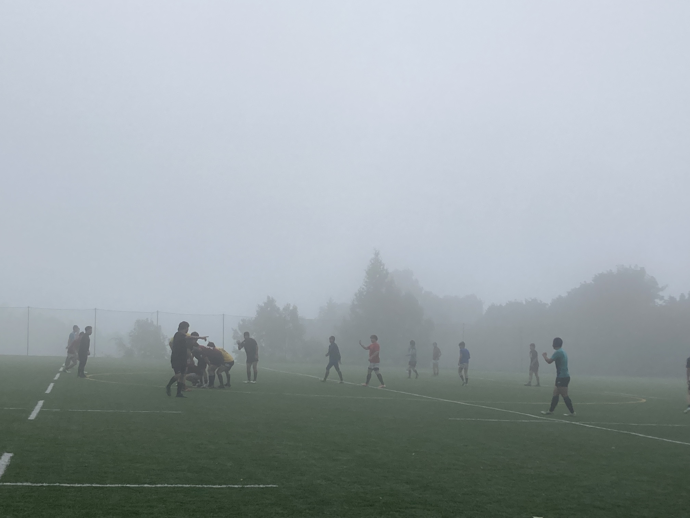
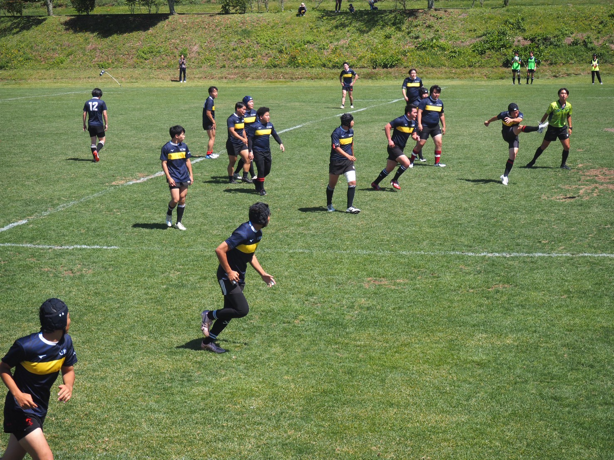
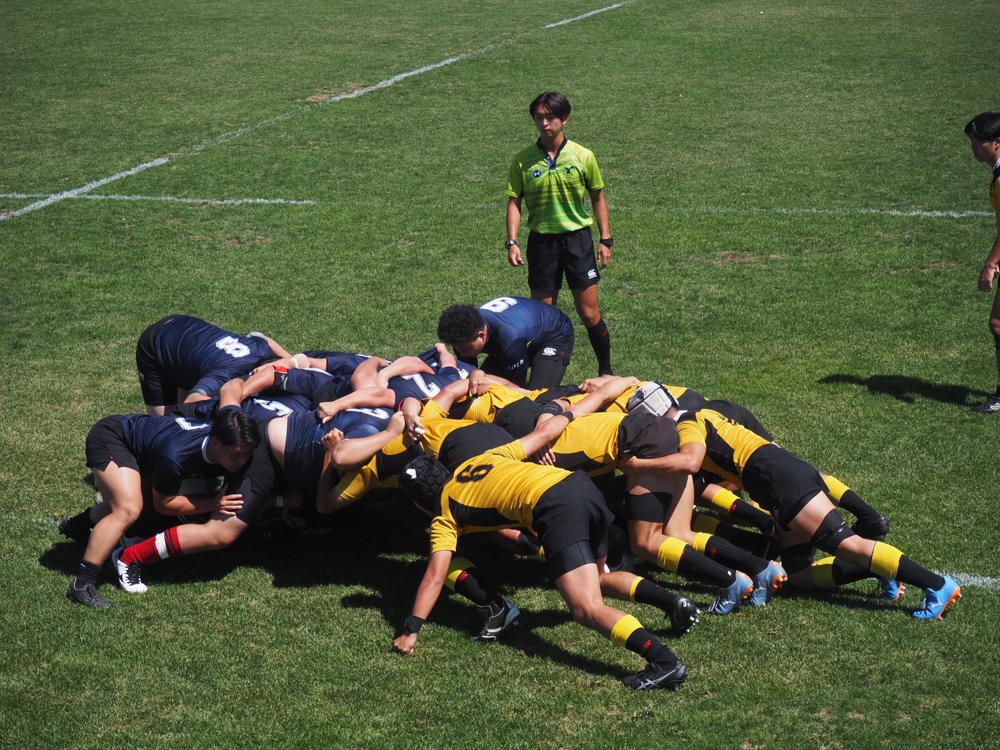

NEWS
2025.09.25
夏の菅平合宿のレポートを公開しました！
9/4(木)～9/7(日)の4日間、菅平のラグビー合宿へ行ってきました！今回はその様子をまとめました。
～1日目～
11:00、菅平に到着。 上田市の「こぶたや」さんでボリューム満点の美味しいロースカツ定食をいただきました。
練習グラウンドに移動し、活動開始！高原ならではの涼しい風を浴びながら練習に励み、低酸素の状態に慣れていきました。かなりきつそうにしていましたが、無事に1日目の練習を終えました。
1日目の夕飯は、宿舎で食べる初のお食事。品数が多く、白米もたっぷり用意されており、お腹を満たすことができました。
その後は宿舎でゆっくり休み、1日目を終えました。
～2日目～
この日は午前に電早単独練習、午後に合同チームでの全体練習をしました。
しかし天気は朝から大雨！東京での蒸し暑さとは違い、菅平での雨はとても寒かったです…。
合同練習では、FWとBKに分かれての練習や、スクラム、ラインアウトなどの有名なプレーの練習など普段できない実践的な練習をすることができました。


午前中使っていたグラウンドよりもさらに標高の高い場所にあるグラウンドを使ったのですが、霧が立ち込め、まさに雲の中のラグビー、という光景でした。幻想的～！
～3日目～
いよいよ試合の日、相手は明治大学体同連ラグビー部(MRC)。場所はサニアパーク。
10:30にグラウンドに入り、涼しいといえど眩しい日差しの中、アップを始めました。
12:30、キックオフ！！
前後半各25分の試合が始まります。(この菅平合宿で行われる試合は秋の大会の練習試合のようなもので、前後半各25分でした。)
結果は0-32と負けてしまいましたが、最後まで戦い抜きました！ 夕飯は試合の反省や他愛のない話で和気あいあいとしていました(*^^)
最終日に向けてエネルギーチャージです。
～4日目～
試合2日目の相手は、慶應義塾理工学部體育會ラグビー部(KER)。 9:30にグラウンドに入り、アップをし、11:10、キックオフ！！
スクラムが安定し、相手の間を走り抜けられそうな場面も多々ありました。しかし惜しくもトライには届かず、0-61と悔しい結果になってしまいましたが、大きな怪我もなく無事に終えることができました。


～菅平合宿を終えて～
仲間と声を掛け合ってプレーを改善していこうとする姿や、練習そして試合後にすっきりした表情で話す姿などが、合宿ならではの光景です。
マネージャーという立場としての感想になってしまいますが、1人1人のラグビーのスタイルやラグビーに対する姿勢が垣間見えた、貴重な経験でした。
合宿での2試合を糧に、合同チームの絆も深め、秋季大会、頑張っていきたいと思います！今後とも応援のほど、よろしくお願いいたします。